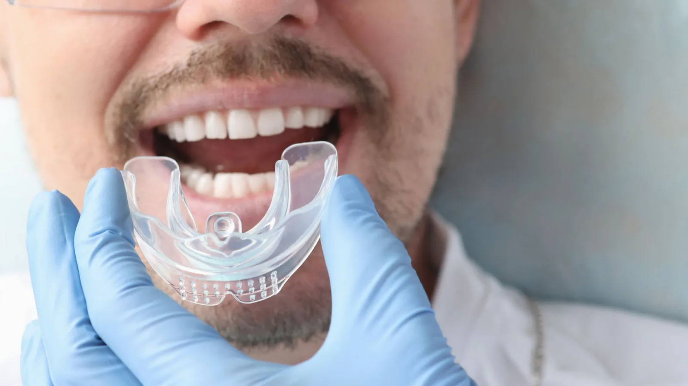

General & Preventive Dentistry
The cheapest dental work you will ever pay for.
A knocked-out front tooth is not a one-off cost. It is a lifetime of restorations — a replacement now, and further work every decade or so as materials age and the site changes. Set against that, a custom mouthguard is inexpensive.
In a town where football, netball, hockey and basketball fill the weekend, this is worth taking seriously. Mouthguards are recommended for any sport with a risk of contact or a hard ball, and for skateboarding, BMX and similar.

Why custom, rather than off the shelf
Boil-and-bite guards from a sports store are better than nothing, but not by as much as people assume. They are made from a generic shape, they rely on you clenching to hold them in place, and they tend to be bulky enough that talking and breathing are difficult. Guards that are uncomfortable get left in the bag.
A custom mouthguard is made from a scan or impression of your own teeth. It fits closely without being held in place by biting, it is thicker where impact is likely and thinner where it is not, and it interferes far less with speech and breathing. Because it is comfortable, it gets worn.
How it is made
We take a digital intra-oral scan, which takes a few minutes and avoids the tray of impression putty. The scan goes to a dental laboratory, where the guard is fabricated to the contours of your teeth. You choose the colour — club colours are the usual request.
It is then fitted and checked in your mouth so nothing rubs and the bite is even.
Children and growing mouths
Children and teenagers need their guards remade more often, because teeth are still erupting and jaws are still growing. A guard that fitted last season may not seat properly this season, and one that does not seat properly does not protect properly.
Have it checked at each check-up, and expect to replace it more often during the years when adult teeth are coming through.
Looking after it
Rinse in cold water after use, let it dry, and keep it in its ventilated case rather than loose in a bag. Keep it out of hot water and out of a hot car, since heat distorts the material. Bring it to your check-up so we can look at the fit.
Frequently asked questions
Any sport with a risk of contact or a hard projectile — football, rugby, hockey, netball, basketball, boxing, martial arts, cricket, lacrosse — plus skateboarding, BMX and similar. Many clubs and associations require them.
An adult guard that is well looked after generally lasts a few seasons. Children’s guards need replacing more often as teeth erupt and jaws grow. Bring it in and we will check the fit.
Considerably better than in a boil-and-bite guard, though there is an adjustment period. Most people find a custom guard becomes unnoticeable within a session or two.
Yes, and it is strongly advised. A guard for someone in braces is made differently to allow for tooth movement and to protect the lips and cheeks from the brackets. Tell us you are in treatment when you book.
Two — one short appointment for the scan, and one to fit it. Turnaround from the laboratory is usually one to two weeks, so allow time before the season starts.
No. A sports mouthguard absorbs impact; a night guard protects teeth from grinding and clenching. They are made from different materials for different purposes and are not interchangeable.